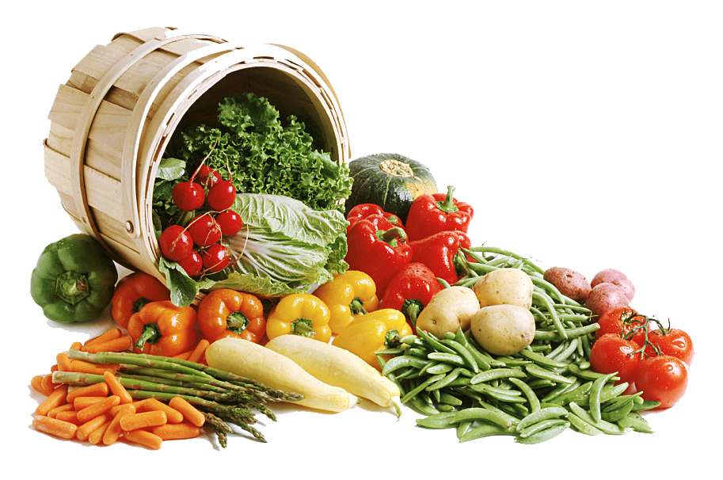

Les bienfaits des pokebowls
Les pokebowls sont une excellente option pour ceux qui cherchent à manger sainement et à équilibrer leurs repas. Ils sont riches en nutriments et en protéines, ce qui en fait un repas très nutritif. Les pokebowls sont également très variés et peuvent être personnalisés selon les goûts et les préférences de chacun. Les pokebowls sont également une excellente source de fibres, ce qui peut aider à réguler le taux de sucre dans le sang et à améliorer la digestion. Les légumes et les fruits frais qui sont souvent inclus dans les pokebowls sont également une excellente source de vitamines et de minéraux essentiels. Enfin, les pokebowls sont très faciles à préparer et à emporter, ce qui en fait une option pratique pour les personnes qui n'ont pas le temps de cuisiner.
